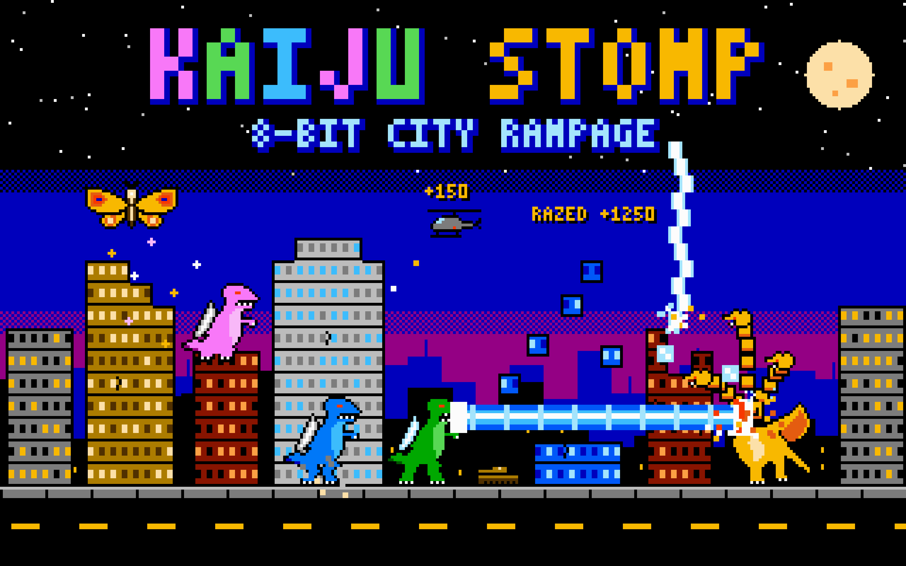

LUNA
pink / blush / plum
Game project · HTML5 Canvas · 2026
A single-file 8-bit arcade game. Pick a kaiju, flatten a pixel city block by block, dodge the military, and survive two boss fights.

Playable demo
This game is played with a keyboard. Open this page on a laptop or desktop to play.
The roster
Each playable kaiju shares one hand-drawn sprite sheet, recolored at load time. The character select is personal: the game was built for Luna, Luka and Kanoa.
pink / blush / plum
green / lime / forest
azure / sky / navy
Boss fights
Rampage far enough and a siren sounds. The camera locks into an arena, the army pulls back, and a boss arrives. They alternate and get tougher each time they return.
Build notes
Everything draws to a 256 × 224 canvas, the NES's resolution, and the canvas is scaled by whole numbers with nearest-neighbor filtering, so pixels stay square and sharp at any window size.
Every sprite is a small character map (k = outline, g = hide, s = dorsal plate) that renders once into an offscreen canvas, mirrored for both directions. The moth is stored as half a sprite and mirrored at load.
Towers are grids of 8 × 8 blocks with their own hit points. Break a block and everything above it detaches into falling debris, which can crack the floor it lands on and set off chain collapses.
A fixed 60 Hz update step with an accumulator keeps the physics the same on 60, 120 and 144 Hz screens. Sound effects are synthesized live with Web Audio square waves and filtered noise. There are no audio files.
Every color on screen comes from this NES-style set.